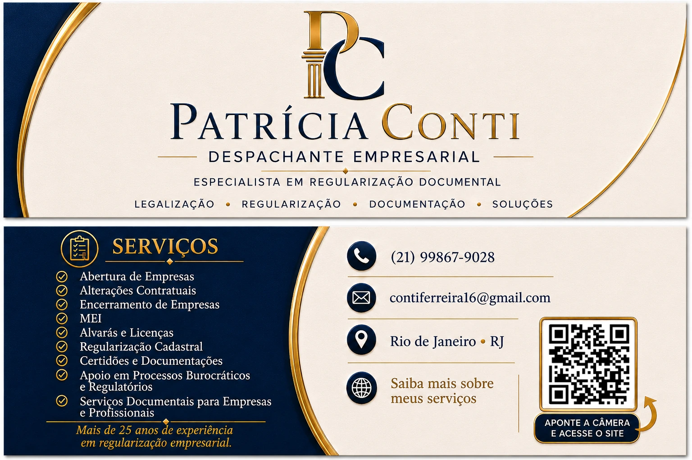
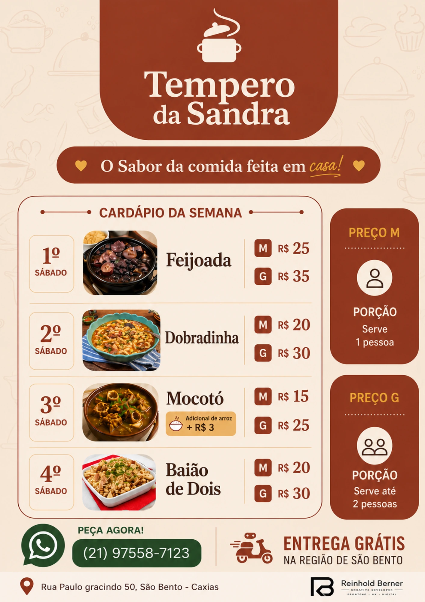
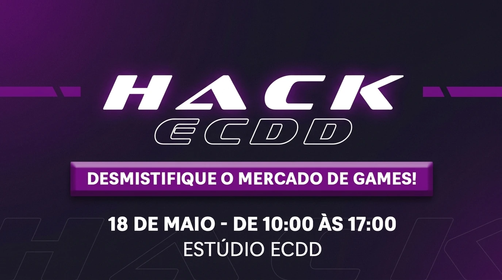
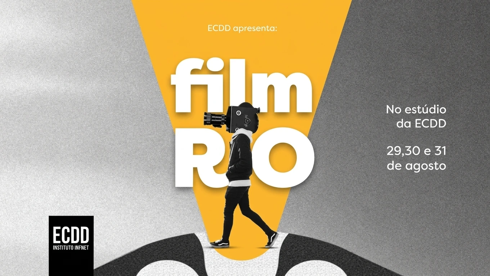
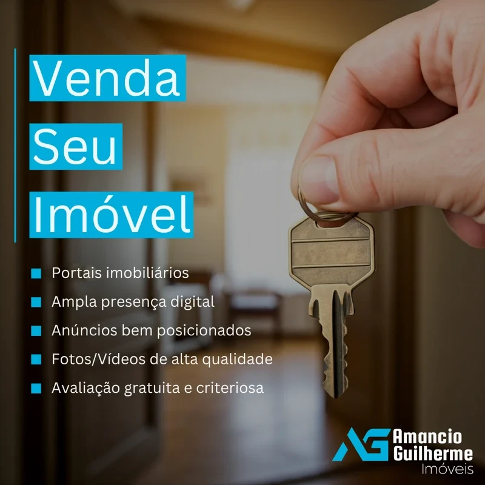
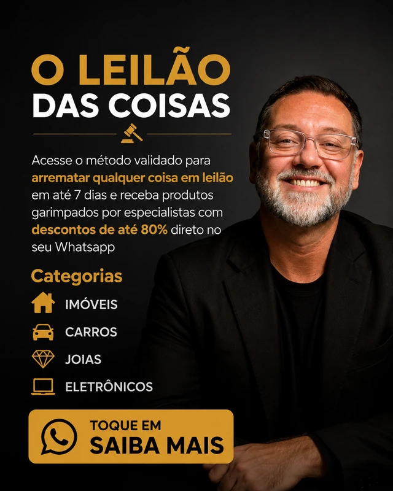

Branding e presença digital
Patrícia Conti
O posicionamento orientou a identidade, o conteúdo e a experiência do site para dar unidade à apresentação profissional de Patrícia.
2Doods Design · Direção de Reine
Visitar site Nova aba
Estúdio criativo
Somos a 2Doods Design. Desenvolvemos marcas, conteúdo e experiências digitais.
Identidade, sites, eventos e audiovisual no portfólio da equipe.

Branding e presença digital
O posicionamento orientou a identidade, o conteúdo e a experiência do site para dar unidade à apresentação profissional de Patrícia.
2Doods Design · Direção de Reine
Visitar site Nova aba

Site institucional e cardápio digital
O site e o cardápio reúnem a oferta em um só lugar e facilitam o caminho de quem quer escolher um prato e fazer um pedido.
2Doods Design · Direção de Reine
Visitar site Nova aba

Produção de eventos
Diogo participou da produção do evento e da gestão de imprevistos durante a operação.
Projeto coletivo · Produção de Diogo Pernambuco
Ver projeto no Behance Nova aba

Comunicação e narrativa audiovisual
O projeto coletivo faz parte do portfólio audiovisual de Diogo e ilustra o trabalho de comunicação e narrativa do evento.
Projeto coletivo da ECDD · Portfólio de Diogo Pernambuco
Ver projeto no Behance Nova aba

Gestão de tráfego pago
Eduardo criou, configurou e gerenciou campanhas de divulgação de imóveis, com pesquisa de público e região e testes de segmentação.
Eduardo Pereira · Gestão de tráfego pago
Ver portfólio no Canva Nova aba

Gestão de tráfego e criativos
Eduardo otimizou campanhas no Meta Ads, analisou o desempenho, testou páginas de destino e participou da criação de peças.
Eduardo Pereira · Gestão de tráfego e criativos
Ver portfólio no Canva Nova aba
A equipe por trás da 2Doods Design.
Sobre mim
Direção de conteúdo
Eu sou o Reinhold Berner, mas pode me chamar de Reine. Na 2Doods, eu puxo a direção de conteúdo. Gosto de pegar uma ideia ainda meio solta e dar forma pra ela. Isso pode virar uma pauta, um roteiro, um vídeo, uma identidade visual ou um site. O que me interessa é entender o que a pessoa precisa encontrar ali e construir a peça a partir disso.
Minha formação passa pelo bacharelado em Design de Games na Universidade Anhembi Morumbi. Foi nesse percurso que aproximei narrativa, design e experiência de quem interage com o que a gente cria. Na EBAC, venho aprofundando Direção de Conteúdo para TV e Mídias Digitais e Inteligência Artificial. Também fiz cursos de Comunicação Efetiva e Introdução à IA Generativa pela Santander Open Academy, Design Thinking pelo Centro Paula Souza e Edição de Vídeos pelo IFSP.
Na ASDUERJ, trabalhei com comunicação institucional, pautas, coberturas e produção de conteúdo, incluindo roteiro, captação e edição de vídeos curtos. Na Santander Open Academy, também apoiei a organização de atividades educacionais e o contato com participantes. Na ANPUH Escola, fiz o desenvolvimento da página educacional, pensando em como organizar as informações e facilitar a navegação. Na 2Doods, trabalho da pesquisa à publicação, com atenção ao roteiro, à edição e à linguagem de cada canal.
No projeto da Patrícia Conti, trabalhei posicionamento, identidade e presença digital pra dar unidade à forma como ela apresenta seu trabalho. No Tempero da Sandra, o desafio era mais comercial. Criei um site institucional com cardápio digital e um caminho simples pra pessoa conhecer a oferta e fazer o pedido. São projetos diferentes, mas eu parto da mesma pergunta nos dois: o que a pessoa precisa entender ou conseguir fazer quando chega aqui?
Sobre mim
Produção e marketing digital
Sou Diogo Pernambuco e atuo com produção e marketing digital na 2Doods. Na produção de eventos, tenho experiência em coordenar equipes e lidar com mudanças durante a operação. Quando surge um imprevisto, o trabalho é decidir o que precisa ser resolvido primeiro e manter a equipe informada para que o evento siga.
Sou formado em Publicidade e Marketing pelo Instituto INFNET e tenho pós-graduação em Marketing em Mídias Digitais pela FGV. No bloco de Direção de Arte da ECDD, desenvolvi uma proposta acadêmica para a Panini com foco na criação de personagens que ampliassem a diversidade nas histórias em quadrinhos.
No Hack ECDD, fiz parte da equipe de produção de um evento híbrido sobre o mercado de games, com programação presencial e transmissão on-line. No Film Rio, colaborei na arte de divulgação de um encontro da ECDD sobre cinema e audiovisual, com três dias de programação e transmissão ao vivo.
Também tenho experiência com campanhas em Google Ads e Meta Ads. Essa frente complementa meu trabalho no audiovisual e nos eventos. Depois de produzir uma peça ou planejar uma ação, a mídia digital ajuda a definir onde ela vai circular e para qual público.
Locução e edição
Trabalha com locução e edição na produção audiovisual.
Contato